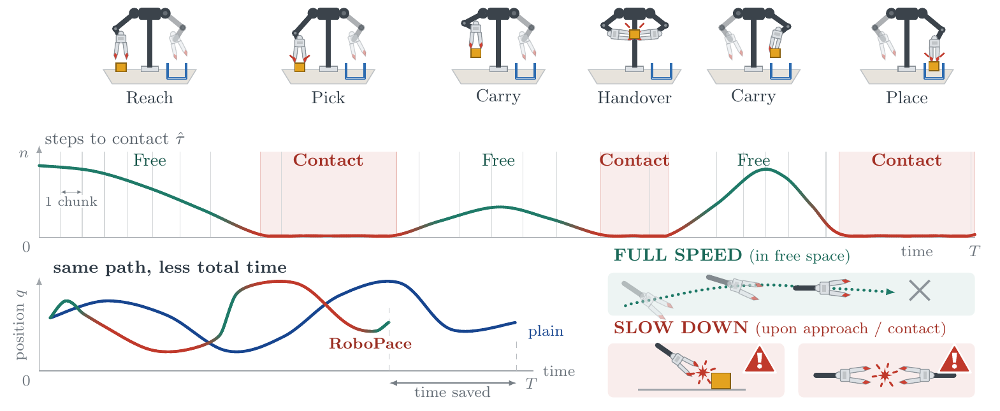
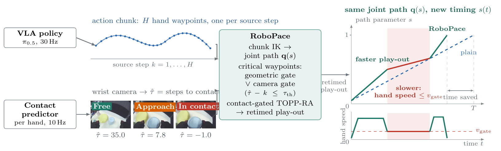
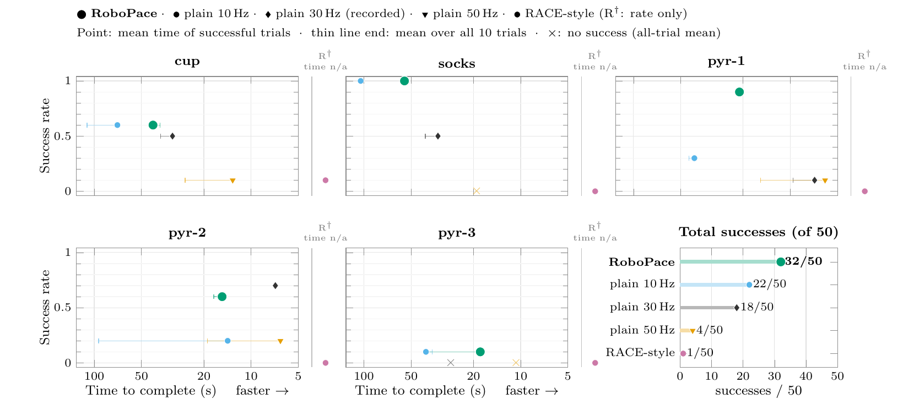
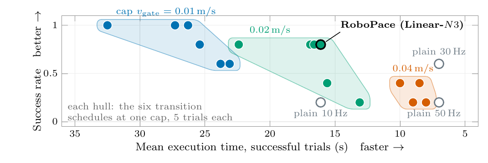
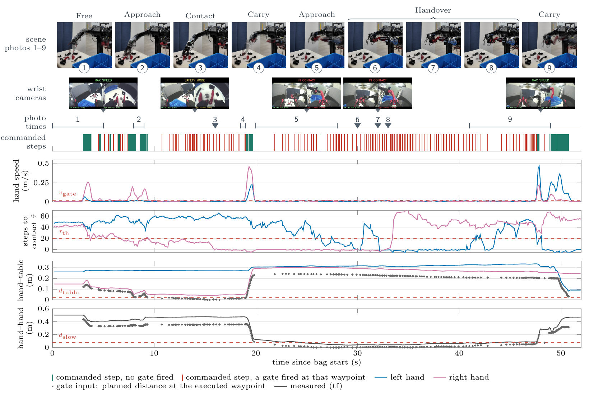

TL;DR RoboPace keeps the path a VLA policy predicts and re-times it online: fast in free space, slowed to a hand-speed cap where contact is predicted, solved together with the robot's joint limits in one time-optimal path parameterization. No retraining.

Two inputs arrive in parallel: the policy's action chunk and a per-hand contact predictor on the wrist camera. RoboPace turns the chunk into a joint path, marks the waypoints where a contact is imminent, and solves for a new timing that is fast elsewhere and capped there.

On a dual-arm robot and five commands, RoboPace has the highest success rate on four of five, matching the reliability of the slow uniform rate in about half its time. Uniformly faster execution fails at contact; uniformly slower execution is reliable but slow.


One successful RoboPace run per command, real time, hand-held camera.

Supplementary text is provided as appendix.pdf.
Robot manipulation data is shifting from teleoperation toward demonstrations collected without the target robot, through handheld interfaces such as UMI or directly from human hands. Vision-Language-Action (VLA) policies trained on such data inherit the demonstrator's timing, yet what is easy for a human is not easy for a robot. A person makes contact at demonstration speed because the hand is compliant and reacts to touch, whereas a robot bound by actuator limits and tracking delay overshoots and strikes objects at that speed; in free space, by contrast, the robot could move faster than the demonstrator. Existing speed-up methods either retrain the policy on retimed demonstrations or retime its output under the robot's physical limits alone, and so do not slow down where contact is imminent. We present RoboPace, an online retiming layer that preserves the policy's geometric path while adapting its timing to the target robot. RoboPace anticipates contact through two complementary cues: forward kinematics places hand meshes along the predicted chunk to measure their distance to the other hand and the table, while a wrist-camera model predicts the remaining steps until hand-to-object contact. Waypoints flagged by either cue receive a tightened velocity ceiling, which is imposed together with the robot's joint limits in a single time-optimal path parameterization, so that the robot moves fast in free space and decelerates near predicted contact. RoboPace sits between trajectory generation and tracking and requires no policy retraining. Uniformly faster execution fails at contact, and uniformly slower execution is reliable but slow. On a dual-arm robot performing three contact-rich tasks, RoboPace achieves the highest success rate on four of five commands, matching the reliability of slow uniform execution in about half its time. 6/10 against 6/10 (plain 10 Hz) and 5/10 (plain 30 Hz), and \textsc{pyr}-3 1/10 against 1/10. The gaps that are actually outside the Wilson interval are \textsc{socks} and \textsc{pyr}-1 only; the headline should be stated at that strength.}